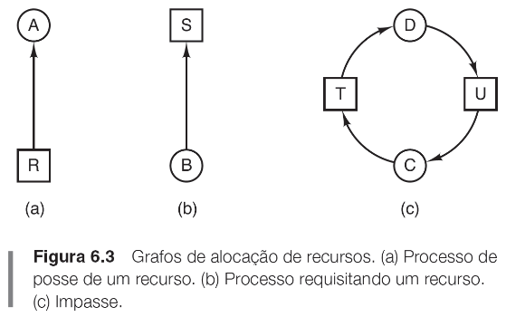
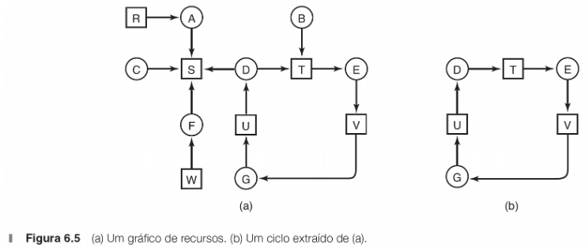
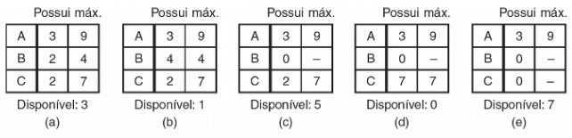

Obtenção de recursos
- Requisitar o recurso.
- Usar o recurso.
- Liberar o recurso.
O que é um deadlock/impasse?
Uma situação onde todos os processos de um grupo
esperam por eventos que somente outro processo do
mesmo grupo pode fazer acontecer.
Como todos estão esperando, nenhum evento esperado acontece.
Condições necessárias para a ocorrência de um deadlock
- Exclusão mútua.
- Posse e espera.
- Não preempção.
- Espera circular.
Modelagem de deadlocks

Estratégias para lidar com deadlocks
- Ignorar o problema.
- Detectar e recuperar. Deixar os impasses ocorrerem, detectar e recuperar.
- Evitar dinamicamente por meio de alocação cuidadosa de recursos.
- Prevenir, negando estruturalmente uma das quatro condições necessárias.
Detecção de deadlocks
Duas estratégias:
- Procurar processos bloqueados há muito tempo;
- Registrar alocação de recursos e verificar de há dependências circulares.
Algoritmo para detecção de deadlocks

Busca em profundidade (depth-first search).
Aguarda uma árvore. Se durante a busca, encontrar
novamente um nó previamente visitado, gera um ciclo
(deadlock).
Se já visitou todas arestas de um dado nó, realiza
backtrack para o nó anterior. Ao realizar backtrack
para raiz e não conseguir continuar, o subgrafo não
contém ciclos.
Se for válido para todos os nós, o grafo inteiro é livre de ciclo.
Recuperação de deadlocks
Recuperação por eliminação de processos.
Recuperação por retrocesso (rollback).
Evitando deadlocks
Alocar recursos de forma que deadlocks nunca aconteçam. Supondo que
alguma informação sobre a necessidade de recursos está disponível.
ex: algoritmo do banqueiro.

Prevenção de impasses
Pode ser realizada atacando a condição de:
- exclusão mútua: spooling
- posse e espera: reserva de todos os recursos necessários antes de travar
- não-preempção: permitir que um processo “roube temporariamente” um recurso de outro.
- espera circular: ordenação numérica dos recursos.